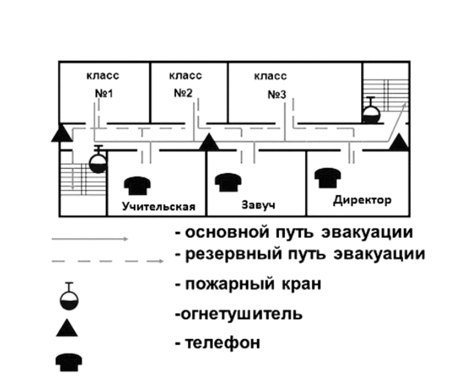
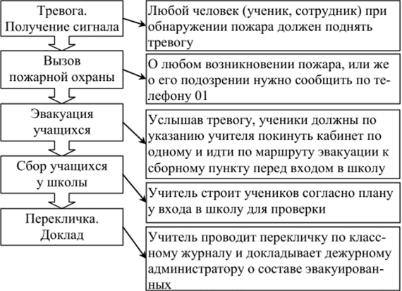

Что такое противопожарная профилактика
Под противопожарной профилактикой(ПП) понимается комплекс организационных и технических мероприятий, направленных:
Противопожарная профилактика включает следующие мероприятия:
Ответственность за пожарную безопасность и требования пожарной безопасности
Ответственность за пожарную безопасность возлагается на руководителей ОУ. Руководители ОУ обязаны назначить должностных лиц, ответственных за пожарную безопасность отдельных объектов. В обязанности руководителей организаций входит:
В помощь пожарной охране на предприятиях и в ОУ организуются добровольные пожарные дружины и пожарнотехнические комиссии.
Все ОУ должны быть оснащены установками автоматической пожарной сигнализации, автоматического пожаротушения, дымоудаления, располагать необходимыми первичными средствами пожаротушения и инвентарем.
Чтобы уменьшить вредное действие ОФП и скорость распространения огня, специалисты рекомендуют:
Необходимо также учитывать, что мебель и перегородки из ДСП и металлических рам горят намного медленнее дорогой лакированной мебели из цельного дерева. Шерстяные и войлочные ковры безопаснее синтетических. Чем легче и меньше шторы, тем легче их сорвать и затоптать при возгорании. Есть шторы и жалюзи из менее горючих материалов. Особенно важно заменить старую проводку, скрыть ее в защитных кожухах, обеспечить однородность металла в соединениях, поставить исправные предохранители (пробки). Сегодня уже нет проблем с установкой недорогой и надежной охранно-пожарной сигнализации отечественного производства. Важно уметь правильно реагировать на ее срабатывание.
В ППБ 01-03 приведены следующие требования пожарной безопасности к территориям:
По окончании рабочего дня необходимо проводить осмотр помещения. При осмотре следует особо обращать внимание на выполнение следующих требований:
С целью предупреждения пожара в помещениях запрещается:
ры;
В ОУ необходимо использовать знаки безопасности, соответствующие требованиям ГОСТ Р 12.4.026-2001. К ним относятся:
Согласно Правилам пожарной безопасности все работники организаций должны допускаться к работе только после прохождения противопожарного инструктажа, а при изменении специфики работы проходить дополнительное обучение по предупреждению и тушению возможных пожаров в порядке, установленном руководителем организации (ОУ).
Для изучения правил пожарной безопасности все работники ОУ должны проходить противопожарный инструктаж: вводный, первичный и повторный.
При проведении вводного инструктажа инструктируемые должны быть ознакомлены со следующими темами:
Вводный инструктаж допускается проводить одновременно с инструктажем по охране труда. О проведении вводного противопожарного инструктажа и проверке знаний производится запись в журнале регистрации вводного инструктажа с обязательным и подписями инструктировавшего и инструктируемого.
Первичный инструктаж проводится непосредственно на рабочем месте. При этом инструктируемые должны быть ознакомлены:
Повторный инструктаж все работники должны проходить не реже одного раза в шесть месяцев.
О проведении первичного и повторного инструктажей делается запись в журнале регистрации инструктажей по охране труда.
Проведение противопожарного инструктажа в обязательном порядке должно сопровождаться практическим показом способов использования имеющихся средств пожаротушения.
В каждом ОУ руководитель обязан назначать и проводить учения (тренировки) с персоналом и учащимися по отработке навыков эвакуации. Практика показывает, что при этом выявляется немало проблем, устранение которых уже на следующей тренировке позволяет сократить время первой пробной эвакуации (свыше 30 минут) в 2-3 раза. Однако желаемые нормативные 6 минут, как правило, так и остаются недосягаемыми. Резерв ускорения при настоящих событиях заложен, вероятно, в более активном использовании окон первого этажа. Для удобства выхода через оконные проемы можно изнутри поставить стулья, а снаружи стол или парту.
Основными нормативными правовыми документами в области пожарной безопасности являются:
Федеральный закон от 21.12.1994 № 69-ФЗ «О пожарной безопасности».
Правила противопожарного режима в Российской Федерации (утверждены Постановлением Правительства РФ от 25.04.2012 № 390 «О противопожарном режиме»).
СНиП, нормы пожарной безопасности и др. (например, СНиП 21-01-97 «Пожарная безопасность зданий и сооружений»).
Региональные документы - правила пожарной безопасности, законы о пожарной безопасности конкретных регионов.
Ведомственные (объектовые) документы - инструкции о мерах пожарной безопасности и действиях при пожаре (например, Письмо Минобрнауки РФ от 27.02.2010 № 16-486/07-03 «О декларациях пожарной безопасности»).
Приказы, инструкции, планы, указания руководителя ОУ.
Нормативно-правовая база в сфере пожарной безопасности постоянно совершенствуется, так 1 мая 2009 года вступили в силу Федеральный закон от 22.07.2008 № 123-ФЗ «Технический регламент о требованиях пожарной безопасности», включающий перечень противопожарных мероприятий применительно к учебным заведениям. Если раньше руководители ОУ имели в целом более 150 тыс. норм, которые надо было обязательно выполнять, а многие из них противоречили друг другу, то в настоящее время таких норм всего 1,5 тыс. То есть в 100 раз меньше. Эго говорит о том, что они теперь исчерпывающие, и их в состоянии выполнить учебные заведения.
Граждане обязаны:
Ответственность должностных и других лиц за соблюдение пожарной безопасности регулируется ст. 38 и 39 Федерального закона «О пожарной безопасности», а также УК РФ и другими кодексами РФ. При этом может налагаться дисциплинарная, административная, материальная или уголовная ответственность.
p>Также предусматривается ответственность за уничтожение или повреждение имущества (ст. 167 и 168 УК РФ) в результате неосторожного обращения с огнем, за нарушение или невыполнение правил пожарной безопасности на предприятиях, в учреждениях, государственных и иных организациях.В каждом ОУ должна быть организована система проведения инструктажей сотрудников по пожарной безопасности.
Противопожарный инструктаж - это доведение до работников ОУ основных требований пожарной безопасности, изучение средств противопожарной защиты и действий в случае возникновения пожара, В зависимости от характера и времени проведения инструктаж может быть вводным, первичным, повторным, плановым, целевым.
Ежегодно должен издаваться приказ руководителя ОУ, которым закрепляются лица, ответственные за противопожарную безопасность по каждому помещению. Именно эти лица (педагоги, сотрудники, электрик, сантехник, повар), каждый на своем месте, следят за исправностью всех опасных приборов и механизмов, правильностью их хранения и эксплуатации, своевременно подают заявки на ремонт и устранение причин возможных аварий, загораний и иных происшествий.
Этим же приказом из хозяйственно-технического персонала ОУ создается пожарно-техническая комиссия, которая ежеквартально обследует все помещения с целью выявления отклонений от требований Правил пожарной безопасности. В случае выявленных нарушений и отклонений они немедленно устраняются, а при невозможности быстрого устранения комиссией или инспектором пожарной охраны составляется акт, который вместе с заявкой передается в соответствующий орган управления образованием.
В зданиях ОУ при единовременном пребывании на этаже более 10 человек должны быть разработаны и на видных местах вывешены планы (схемы) эвакуации людей в случае пожара для каждого класса, аудитории, а также предусмотрена система оповещения о пожаре. При пребывании на этаже 50 и более человек в дополнение к схематическому плану разрабатывается инструкция, определяющая действия персонала по обеспечению безопасной и быстрой эвакуации людей, по которой каждое полугодие проводятся практические тренировки.
План эвакуации людей при пожаре разрабатывается и вывешивается на видном месте в каждом ОУ.
В плане эвакуации должны быть отражены:
План эвакуации состоит из двух частей - графической и текстовой. В графической части показывается планировка этажей здания (рис 6.1.). Планы можно упрощать, изображая конструкции в одну линию, исключать небольшие помещения, не связанные с пребыванием людей. Но все эвакуационные пути и выходы должны быть обязательно показаны на плане.
Наименование помещений обозначают непосредственно на планах этажей либо все помещения нумеруют и прилагают пояснение к плану. Эвакуационные выходы и лестницы нумеруют. Это позволяет сохранить и упростить пояснительную записку к плану эвакуации. Двери на плане эвакуации показывают в открытом виде. Если при эксплуатации отдельные выходы закрыты, на плане эвакуации дверной проем изображают закрытым и отмечают местонахождение ключей с надписью: «Ящик с ключом от наружной двери».
Puc.6.L Графический план эвакуации людей при пожаре
На план наносят стрелки, указывающие маршруты движения людей исходя из наименьшего времени выхода и наибольшей надежности путей эвакуации.
Пути эвакуации делят на основные, которые обозначают сплошными зелеными линиями со стрелками, и резервные, которые обозначают пунктирными линиями со стрелками.
Кроме маршрутов движения обозначают места нахождения ручных пожарных извещателей, огнетушителей, пожарных кранов, телефонов и другого пожарно-технического оборудования.
Фотолюминесцентный план эвакуации даёт возможность ориентироваться и находить выход из помещений, а также противопожарное оборудование в полной темноте.
Графическую часть плана эвакуации в рамке под стеклом вывешивают на видном месте, обычно при входе на этаж. Текстовая часть плана эвакуации утверждается руководителем объекта и представляет собой таблицу, содержащую перечень действий при пожаре, порядок и последовательность действий, должности и фамилии исполнителей.
Все указанные документы утверждаются руководителем ОУ. Они необходимы для создания системы персональной ответственности и контроля. При этом следует проверить: реальны ли указанные маршруты для спасения, нет ли стен и решеток, установленных арендаторами, доступны ли дубликаты ключей от запасных выходов, очищены ли проходы от посторонних предметов.
Часть методической работы руководитель ОУ может поручить преподавателю БЖ (ОБЖ).
Важнейшее требование пожарной безопасности заключается в том, что ни один сотрудник ОУ (педагог, уборщица, повар и др.) не должен приступать к работе, не уяснив своих действий в случае пожара или иной ЧС, не разобравшись, где находятся средства спасения и пожаротушения и как ими пользоваться.
Чтобы предотвратить панику и обеспечить безопасную, организованную и эффективную эвакуацию всех присутствующих в ОУ через все имеющиеся выходы, и чтобы настроить сознание на рациональное реагирование при столкновении с пожаром или иной аварийной ситуацией как в школе, так и в других местах в помощь директорам школ и должностным лицам в ОУ, ответственным за эвакуацию людей из здания школы (преподаватель-организатор ОБЖ) необходимо разработать порядок действий в случае пожара. Последовательность действий персонала и учащихся ОУ можно разбить на 5 этапов (схема 6.1).
Любой человека - ученик или член персонала школы - при обнаружении пожара должен без колебаний поднять тревогу о пожаре. Оповещение о пожарной тревоге (серия звонков) в любой части здания должно служить сигналом для полной эвакуации из здания школы.
Четко и громко объявить учащимся: «Намочить шарфы и платки для защиты глаз и органов дыхания, одеться (от огня и от холода), приготовиться покинуть опасную зону!» Объявите порядок движения и начинайте покидать здание. Правильная и четкая команда даст положительный психологический настрой, ускорит правильные действия и предотвратит панику.
Схема 6.1. Алгоритм действий при экстренной эвакуации учащихся из ОУ
Все должны выполнять подаваемые команды. Кто-то из персонала ОУ должен принять руководство на себя и осуществлять его до появления более подготовленного специалиста или пожарного, который прямо заявит, что берет дальнейшее руководство вашими действиями на себя.
Если огонь небольшой (в размерах костра), попробуйте справиться с ним силами подготовленных сотрудников и старшеклассников с помощью первичных средств пожаротушения. Укрыв лицо, облившись водой и соблюдая осторожность, можно срывать горящие занавески, топтать огонь ногами, заливать водой, накрывать одеялом, сбивать одеждой, полотенцем, книгами, использовать огнетушители, воду из обычных и пожарных кранов, землю из цветочных горшков. Помните, что тушить включенные в сеть электроприборы опасно для жизни. Их предварительно необходимо отключить на электрощите или выдернув провод из розетки. Для тушения электроустановок под напряжением до 1000 В можно использовать порошковые огнетушители. Углекислотные огнетушители можно применять при напряжении до 10 кВ.
О любом возникновении пожара, даже самого небольшого, или же о подозрении на пожар (появлении огня, запаха дыма или гари) нужно немедленно сообщить пожарной охране по телефону «01». Быстро и четко сообщить диспетчеру пожарной охраны: что горит, ваш точный адрес и фамилию. Можно посоветовать, как лучше подъехать к месту пожара. При отсутствии телефонной связи направить людей в разные места с целью дозвониться, поймать машину, передать милиции. Дублирование вызова пожарной охраны осуществляет дежурный администратор или классный руководитель, который должен доложить о том, что пожарная охрана вызвана, директору школы (дежурному администратору).
Некоторые руководители тянут «до последнего», боясь вызова пожарных, штрафов и огласки. Подобные действия приводят к трагическим последствиям. Следует помнить, что огонь в помещениях ОУ распространяется во все стороны со скоростью около 1 м в минуту. Поэтому промедление в 10 минут может привести к распространению пожара на площади свыше 300 м2.
Результаты моделирования пожаров и оценки времени до блокирования открытой лестницы ОФП показывают следующие значения:
При этом установлено, что время блокирования путей эвакуации ОФП через открытые проемы в коридорах и лестницах может составлять примерно от 3 до 6 минут в зависимости от места расположения очага пожара и этажа, а расчетное время эвакуации - от 2 до 5 минут. Это значит, что в случае запаздывания сигналов системы обнаружения и оповещения людей о пожаре возникает реальная угроза жизни людей в зданиях с низкой пожарной устойчивостью.
Объявление об эвакуации необходимо делать спокойно, но внушительным и повелительным тоном. При наличии громкоговорящей системы оповещения по всему зданию транслируется заранее подготовленный текст.
При эвакуации учащихся из ОУ преподаватели (работники) обязаны:
До прибытия пожарных учащихся старших классов можно привлекать для оказания помощи в организации эвакуации малышей: помочь их одеть, отвести в теплое помещение, вызвать «скорую помощь», выполнять другие отдельные поручения.
Классы должны идти ровным, размеренным шагом. Выйдя к лестнице, учащиеся одного класса должны держаться вместе и не бежать толпой, а организованно спускаться по одному только с одной стороны лестницы, оставляя другую сторону лестницы для прохода, не допуская, чтобы отдельные учащиеся или целые классы обгоняли друг друга. Все, кто не присутствует в классе во время сигнала тревоги (например, находится в туалетах, учительской, коридоре и т.п.), должны немедленно идти к месту сбора и присоединиться к своему классу или группе.
Каждое здание должно иметь не менее двух эвакуационных выходов. В случае если один из них отрезан огнем, для спасения людей и имущества используется второй.
Двери на путях эвакуации должны открываться свободно и по направлению выхода из здания. Запоры на дверях эвакуационных выходов должны обеспечивать людям, находящимся внутри здания, возможность их свободного открывания изнутри без ключа.
По согласованию с Государственной противопожарной службой МЧС России допускается закрывать запасные эвакуационные выходы на внутренний механический замок. В этом случае на каждом этаже здания назначается ответственный дежурный из числа обслуживающего персонала, у которого постоянно имеется при себе комплект ключей от всех замков на дверях эвакуационных выходов. Другой комплект ключей должен храниться в помещении дежурного по зданию. Каждый ключ в обоих комплектах должен иметь обозначение о принадлежности соответствующему замку.
При эвакуации нельзя допускать скучиванья детей у выходов, а также возникновения паники.
Во время эвакуации нужно призывать к спокойствию. Все эвакуированные должны находиться под неослабным надзором. Для эвакуации верхних этажей необходимо использовать лестничные клетки. Если лестница задымлена, то в момент вывода людей надо быстро раскрыть или выбить стекла в окнах, находящихся на лестничной клетке, и дать приток свежему воздуху. Двери помещений, откуда дым проникает на лестницу, плотно закрыть.
По окончании эвакуации необходимо тщательно осмотреть все помещения, особенно задымленные, помня о том, что дети от испуга часто прячутся в укромные места (в темные углы, иод столы, в шкафы, за шкафами и т.п.). Лица, ответственные за эвакуацию, должны лично убедиться в наличии полного состава каждой эвакуированной группы путем переклички но списку. Около выведенных из зданий учеников должен неотлучно находиться руководитель или учитель. Учащихся необходимо быстрее удалить от горящего здания в безопасное место, в заранее определенный пункт сбора. Это может быть клуб, столовая, административное здание, общежитие, магазин.
Все педагоги и учащиеся должны хорошо знать и понимать правила и способы эвакуации не только из своего ОУ, но и из зданий театров, кинотеатров, клубов, музеев, магазинов, гостиниц, вокзалов и поездов, где планы эвакуации обычно вывешены на видных местах. Особенно они полезны там, где человек не ждет опасности и не может сразу сориентироваться при возникновении опасности и паники. Свой собственный план эвакуации должен возникать в голове у каждого уже при входе в незнакомое здание.
Личная безопасность при эвакуации
Рассмотрим правила личной безопасности при эвакуации в задымленном помещении.
Дышите через влажную ткань, прикрыв ею нос и рот. Следует добиваться, чтобы у каждого учащегося при себе всегда был носовой платок.
По задымленному помещению, коридору передвигайтесь на четвереньках или ползком (внизу меньше дыма). Чтобы уберечься от огня, намочите и накиньте на себя одеяло, пальто, ковер.
Если дверь нагрелась, то не открывайте ее, а поливайте водой и заделывайте щели от дыма и сквозняка.
Не ждите команды, возьмите свои документы, оденьте для защиты больше одежды и выходите на улицу (с первого и второго этажа можно эвакуироваться через окно).
Не следует пользоваться лифтом. При пожарах могут отключить электроэнергию, и тогда трагедия в задымленном лифте неизбежна.
Входя в сильно задымленное помещение, необходимо придерживаться стен и запоминать предметы по пути движения. Ориентироваться в задымленном помещении помогают направление настила досок и паркета пола, расположение окон, дверей и т.п.
Если на внутренние лестницы проникает пламя или они уже охвачены огнем или очень задымлены, необходимо спасать людей через боковые окна и балконы с помощью стационарных и приставных лестниц. При этом следует плотно закрыть все неиспользуемые для эвакуации балконные двери и окна, чтобы в помещение не проникал воздух, усиливающий огонь и направляющий дым в это помещение. Двери, ведущие в соседние помещения и коридор, во избежание проникновения дыма рекомендуется плотно закрыть, а щели в притворе и снизу двери заткнуть подручным материалом (шторами и т.п.), предварительно смоченным в воде.
Собравшиеся внизу люди могут разными способами страховать ваш спуск, например, 5-6 человек сильно растянут иод окном ковер, одеяло, пальто. Можно попросить поискать лестницу, у водителей взять буксировочные тросы и забросить наверх клубок веревки для их подъема, сложить горку из пустых картонных коробок и верхней одежды, подогнать вплотную к стене автобус (грузовик), что снизит высоту спуска, прыжка или падения на целый этаж. Как правило, до критического момента, когда пора прыгать, есть 10-15 минут для поиска и подготовки подручных средств спасения.
Используйте для спуска веревки, связанные шторы, брюки, колготки, шарфы, ремни и любые иные подручные материалы. (После трагического пожара в Самарском УВД в некоторых многоэтажных зданиях сотрудникам учреждений выданы специальные веревки и веревочные лестницы для спуска из окон.)
Директор школы или лицо, его замещающее, услышав тревогу, дает команду на отключение электропитания школы и немедленно должен проследовать к заранее условленному месту в сборном пункте, где он будет у всех на виду, и оставаться там до тех пор, пока нс получит рапорт от всех школьных подразделений.
Вес повара, уборщицы, административный и прочий персонал, услышав тревогу, должны немедленно направиться к месту сбора.
Место сбора - у входа в школу. Придя на место сбора, каждый отдельный класс или группа людей должны занять свое заранее определенное место и находиться там не расходясь.